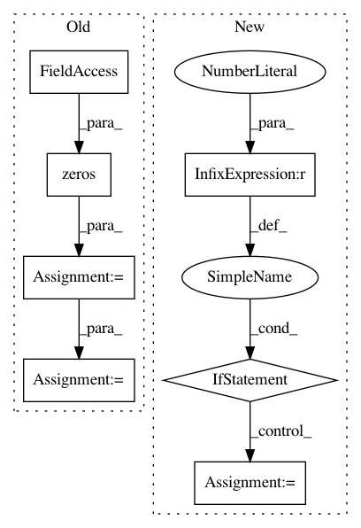

2381a50a70559340a0335288d648b4bb9a675588,slm_lab/agent/algorithm/dqn.py,HydraDQN,train,#HydraDQN#,498
Before Change
logger.debug3(f"Training at total_t: {total_t}")
nanflat_loss_a = np.zeros(self.agent.body_num)
for _b in range(self.training_epoch):
batch_losses = np.zeros(self.agent.body_num)
batch = self.sample()
for _i in range(self.training_iters_per_batch):
with torch.no_grad():
q_targets = self.compute_q_target_values(batch)
y = q_targets
losses = self.net.training_step(batch["states"], y)
logger.debug(f"losses {losses}")
batch_losses += losses.item()
batch_losses /= self.training_iters_per_batch
nanflat_loss_a += batch_losses
nanflat_loss_a /= self.training_epoch
loss_a = self.nanflat_to_data_a("loss", nanflat_loss_a)
return loss_a
else:
After Change
"""
total_t = util.s_get(self, "aeb_space.clock").get("total_t")
self.to_train = (total_t > self.training_min_timestep and total_t % self.training_frequency == 0)
if self.to_train == 1:
total_loss = torch.tensor(0.0)
for _ in range(self.training_epoch):
batch = self.sample()
with torch.no_grad():
q_targets = self.calc_q_targets(batch)
loss = self.net.training_step(batch["states"], q_targets)
total_loss += loss
loss = total_loss / self.training_epoch
// reset
self.to_train = 0
self.body.log_probs = []
self.body.entropies = []
logger.debug(f"Loss: {loss}")
self.last_loss = loss.item()
return self.last_loss
In pattern: SUPERPATTERN
Frequency: 5
Non-data size: 7
Instances
Project Name: kengz/SLM-Lab
Commit Name: 2381a50a70559340a0335288d648b4bb9a675588
Time: 2018-06-12
Author: kengzwl@gmail.com
File Name: slm_lab/agent/algorithm/dqn.py
Class Name: HydraDQN
Method Name: train
Project Name: cornellius-gp/gpytorch
Commit Name: 245e356064ab70304b688519e7b5103f2b1b71c1
Time: 2019-07-15
Author: balandat@fb.com
File Name: gpytorch/models/exact_prediction_strategies.py
Class Name: DefaultPredictionStrategy
Method Name: get_fantasy_strategy
Project Name: scikit-learn-contrib/DESlib
Commit Name: 0e17f47e9a4920e276bb61b60d6de16264bc6bcf
Time: 2017-12-29
Author: rafaelmenelau@gmail.com
File Name: pythonds/util/aggregation.py
Class Name:
Method Name: weighted_majority_voting
Project Name: scipy/scipy
Commit Name: 8655560aa19bbde2b5505ed1e8297474f6706872
Time: 2018-12-21
Author: mdhaber@mit.edu
File Name: scipy/optimize/_linprog_rs.py
Class Name:
Method Name: _phase_one
Project Name: fgnt/nara_wpe
Commit Name: 09204a3dce2b419cd1416504903c41c724fa8de8
Time: 2018-06-27
Author: mail@lukas-drude.de
File Name: nara_wpe/wpe.py
Class Name:
Method Name: segment_axis